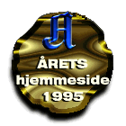
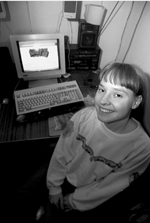

Oppdatert: 26. januar 1996 kl. 14:19
Best likt på Internett

Surferne har talt: Huldra har landets beste hjemmeside på Internett. Premien, en CD-ROM-spiller, har hun fra før.TOR ARNE ANDREASSEN
JAN THORESEN
STIG B. HANSEN (foto)

Hun er 23 år gammel. Jobber som konsulent i et datafirma, men ser ikke så mye til kollegene. Hun spiser heller nudler sammen med vennene på nettet enn å spise lunsj i kantinen.Hver dag siden 6. februar 1995 har hun lagt dagboken sin ut på Internett. Her har flere tusen mennesker lest om alt det dagligdagse som har skjedd med Norges mest populære hulder.
Over 120 personer meldte seg på konkurransen "Årets hjemmeside", som ble arrangert av Aftenposten. En jury plukket ut de ti beste sidene, og la dem ut for avstemming. Huldra fikk flest stemmer, med knapp margin foran 14-åringen Marius Kaase.
Juryen valgte i tillegg til å dele ut en hederspris til Frode Nielsen. Han har utmerket seg med sitt nettmagasin Nielsen Observer. Juryen fant ut han ikke var kvalifisert til å delta i den ordinære konkurransen, fordi hans sider ble tatt inn som en del av det kommersielle tilbudet til Scandinavian Onlie. Derimot skjedde ikke dette før slutten av 1995, og juryen mente at Nielsen fortjente en påskjønnelse.
- Det forbauser meg hvor mange som synes det er interessant å lese om at jeg har vært ute og handlet, sier Huldras alter ego Marianne Evang. Hun er en ikke helt vanlig ung kvinne, som kan være vanskelig å trekke bort fra skjermen, også når hun kommer hjem til drabantby-leiligheten på Ellingsrudåsen.
- Nei da, jeg bruker ikke så lang tid på å lage hjemmesidene mine. Og dagbok ville jeg ha skrevet uansett, forklarer Marianne. - Det var morsomt å bli kåret til vinner i konkurransen om beste hjemmeside. Jeg visste at vennene mine på nettet hadde stemt på meg, men hadde ikke ventet å vinne, sier hun.
Nerd?
Marianne deler leilighet med samboeren Terje Daleng. Han jobber også med, ja du gjettet det, data. I et knøttlite rom har de hver sin datamaskin stående tett inntil hverandre. Der kan de programmere sammen og gi hverandre hint om smarte data-løsninger.Om hun er en nerd, er ikke noe Marianne har ofret så mange tanker.
- Det har hendt at noen har kalt meg det, men det har vært i en spøkefull tone. Det hender datafreakere bruker det selvironisk, sier Marianne.
Ut til folket
Marianne innrømmer at data kunne høres sært ut for mange for noen år siden. Men det siste året har hun merket en enorm utvikling.- Spesielt etter at pressen begynte å interessere seg for Internett har det eksplodert. Har du ikke PC i dag, blir du rett og slett ansett som akterutseilt. Etter at hun ble omtalt i Dagbladet for noen uker siden fikk hun et trettitalls fanbrev, per e-post selvfølgelig, om dagen.
Selv om mange har begynt å utforske Internett, er det bare de færreste som har sin egen hjemmeside. Men Marianne forsikrer at det ikke er så komplisert å profilere seg selv.
- Du trenger bare å kunne noen spesialtegn, men ellers er det som å bruke et vanlig tekstbehandlingsprogram. Marianne har laget sine egne programmer, men for oss vanlige dødelige skal det snart komme programvare som skal gjøre det enda enklere å lage en hjemmeside. Der du kan beskrive deg selv, huset ditt, hunden din, og kanskje skrive dagbok.
[Innhold] [Info] [Aftenposten hjemmeside] [NettHinnen hovedside]
{kind=link}